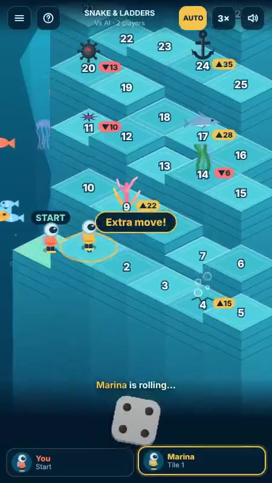
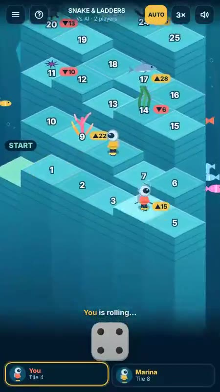
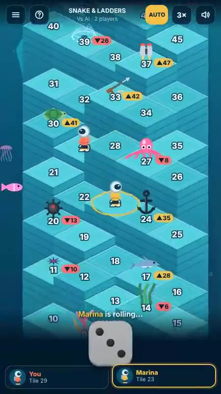
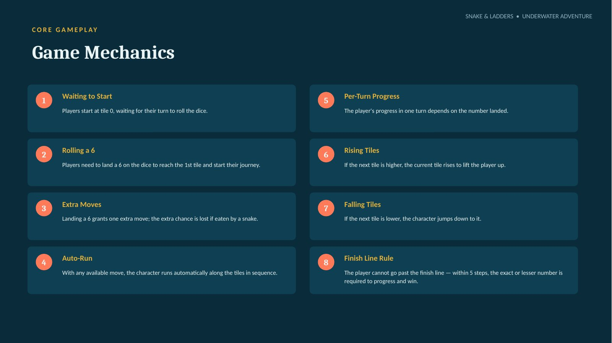
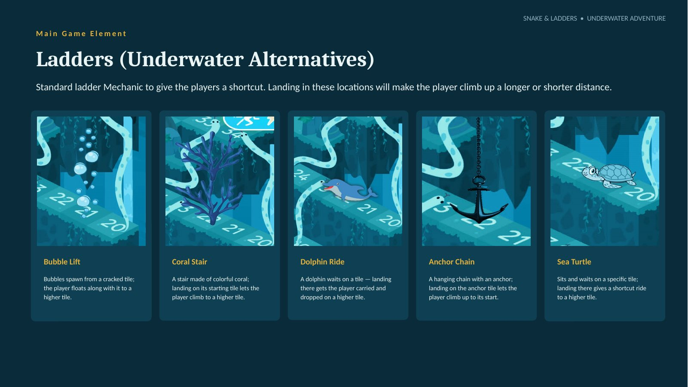
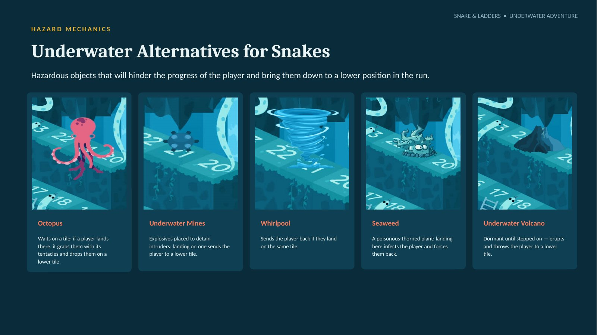
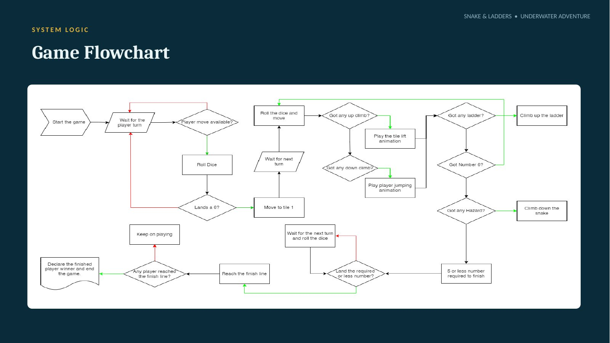
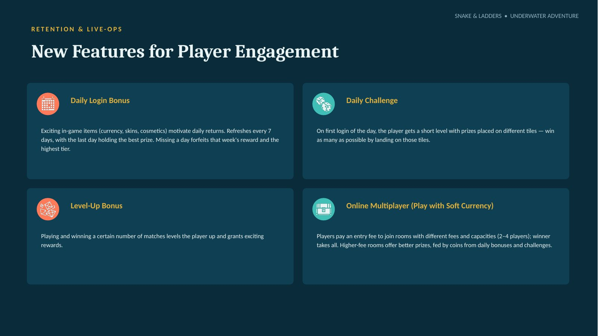
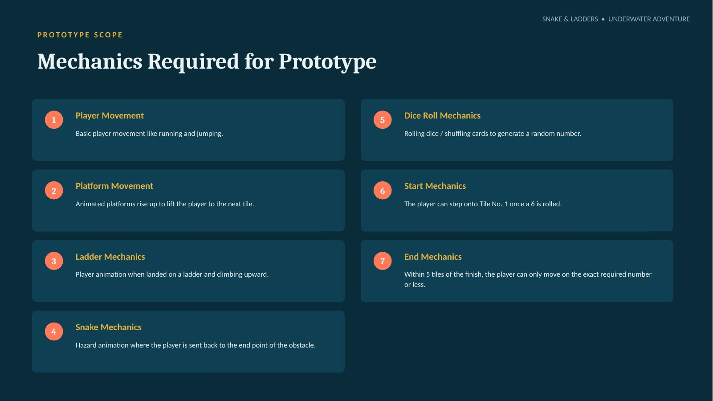

Snake and Ladders: Underwater
An underwater-themed classic with a twist of power-ups and unconventional gameplay elements.
Concept
An underwater-themed Snake and Ladders with isometric, step-mountain boards, power-ups and unconventional gameplay elements. The player starts at zero, rolls to move, and races to the finish line while sea-creature shortcuts lift them up and hazards drop them back. Numbered tiles rise to lift the character when the next tile is higher, and the first player to reach the finish wins.
My role
Principal designer: rule changes to the classic, the shortcut and hazard set, room and mode design, the daily challenge hook and flowchart, as a playable browser prototype.
Prototype screens
Captured from the playable prototype.



Design documentation
Pitch deck slides: mechanics, ladders, hazards, flowchart, live-ops and prototype scope.






Core gameplay in eight rules
- Waiting to startPlayers start at tile 0, waiting for their turn to roll.
- Rolling a 6A 6 is needed to reach tile 1 and start the journey.
- Extra movesA 6 grants one extra move; the extra chance is lost if eaten by a snake.
- Auto-runThe character runs automatically along the tiles in sequence.
- Per-turn progressProgress in a turn depends on the number landed.
- Rising tilesIf the next tile is higher, the current tile rises to lift the player.
- Falling tilesIf the next tile is lower, the character jumps down to it.
- Finish line ruleWithin 5 steps of the end, an exact or lesser number is required to progress and win.
Tap to roll, or shuffle a card
Main control
Tap the dice icon on your turn. The dice reveals a random 1–6 and the character runs automatically along the numbered tiles.
Alternative · card shuffle
Six cards, numbered 1 to 6, are stacked on the player icon. Tap to shuffle; a random card lands on top, is shown to all players, and play continues as normal.
An underwater world
Setting
Blue backgrounds, steps, seaweed and fish, in different shades of blue throughout the palette for immersion.
Game elements
Eels, dolphins, octopus, corals, turtles; whirlpools, underwater mines and volcanoes.
Ambience
Animated fish and jellyfish move in the background; underwater plants add detail.
Ladders, reimagined
Each one is a shortcut that climbs a longer or shorter distance.
| Shortcut | How it works |
|---|---|
| Bubble Lift | Bubbles spawn from a cracked tile; the player floats with it to a higher tile. |
| Coral Stair | A stair of colorful coral; landing on its start tile lets the player climb to a higher tile. |
| Dolphin Ride | A dolphin waits on a tile; landing there carries the player to a higher tile. |
| Anchor Chain | A hanging chain with an anchor; landing on the anchor tile lets the player climb up. |
| Sea Turtle | Waits on a specific tile; landing there gives a shortcut ride to a higher tile. |
Snakes, reimagined
Hazards hinder progress and bring the player down to a lower position.
| Hazard | How it works |
|---|---|
| Octopus | Waits on a tile; grabs the player with its tentacles and drops them lower. |
| Underwater Mines | Explosives placed to detain intruders; landing on one sends the player lower. |
| Whirlpool | Sends the player back if they land on the same tile. |
| Seaweed | A poisonous-thorned plant; landing infects the player and forces them back. |
| Underwater Volcano | Dormant until stepped on, then erupts and throws the player lower. |
Extra hazards and power-ups
Cave Monster
Snatches the player into the cave and drops them on a lower tile.
Thorns
Spike-like objects that send the player one step back.
Harpoon Grapple
Fire the harpoon gun and climb the rope to a higher tile.
Jetpack
Grab the jetpack and ride it up to a higher tile.
Purchasable items
Gems are bought with real currency and used to buy coins and other in-game items.
New player skin
Any animal, any object.
Movement VFX
Effects when the character runs, climbs steps or a ladder, or is eaten by a snake.
Avatar frames
New frames around the player icon, shown to opponents and friends.
Player badges
Rank badges shown to the player and opponents.
Features for player engagement
Daily login bonus
Currency, skins and cosmetics; refreshes every 7 days with the best prize on the last day. Missing a day forfeits that week's reward and top tier.
Daily challenge
On first login of the day, a short level with prizes on different tiles; win as many as possible by landing on them.
Level-up bonus
Playing and winning a certain number of matches levels the player up for rewards.
Online multiplayer
Pay an entry fee in soft currency to join rooms of 2–4 players; winner takes all. Higher-fee rooms offer better prizes.
Mechanics required for the prototype
| Mechanic | Scope |
|---|---|
| Player movement | Running and jumping. |
| Platform movement | Animated platforms rise to lift the player to the next tile. |
| Ladder mechanics | Animation on landing on a ladder and climbing upward. |
| Snake mechanics | Hazard animation sending the player back to the obstacle's end point. |
| Dice roll mechanics | Rolling dice or shuffling cards to generate a random number. |
| Start mechanics | The player steps onto tile 1 once a 6 is rolled. |
| End mechanics | Within 5 tiles of the finish, only the exact number or less moves the player. |